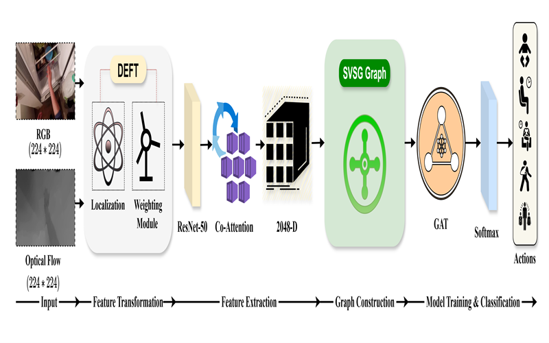

DEFT-DPT: A Lightweight Multimodal Framework for Egocentric Video Action Recognition
IEEE Transactions on Circuits and Systems for Video Technology (TCSVT) · 2026
@article{vishwakarma2026deftdpt,
author = {Vishwakarma, Pawanesh Kumar and Singh, D. K. and Sahu, Abhimanyu},
title = {DEFT-DPT: A Lightweight Multimodal Framework for Egocentric Video Action Recognition},
journal = {IEEE Transactions on Circuits and Systems for Video Technology},
year = {2026},
issn = {1558-2205},
doi = {10.1109/TCSVT.2026.3707206}
}